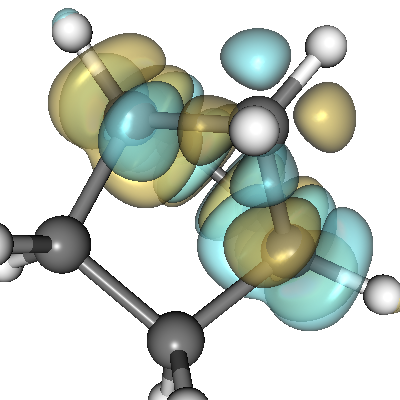

Global display settings affecting rendering speed and quality can be edited through the 3D View Properties window.
3D View Size: changes the 3d view size.
Anti Aliasing: increase the number of samples for better looking pictures with little or no jaggies(i.e. steps in diagonal lines or edges); note that each sample is a complete redraw, so rendering time will increase linearly with the number of samples
 |  |
| Anti-aliasing on | Anti-aliasing off |
Depth peeling: these parameters affect the rendering of transparent surfaces. Note that in general you always need this feature when displaying molecular orbitals, if not you will get wrong results.
When rendering multiple transparent surfaces increase the Max peels parameter until you can see all the overlapping transparent surfaces; change the Occlusion ratio parameter to increase rendering speed or eliminate rendering artifacts: 0 = best quality, 1 = max speed
 | |
| Depth-peeling on | Depth-peeling off |